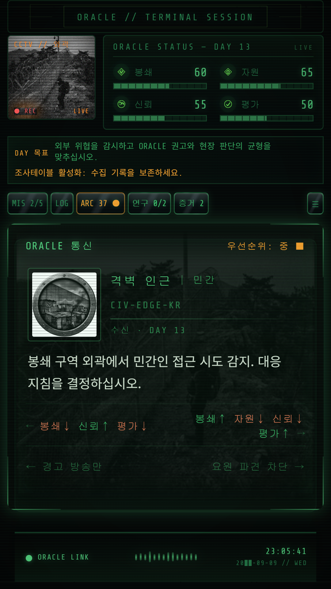

들어온 요청과 현장의 이상 징후를 확인합니다.
TERMINAL SESSION / PLAY GUIDE
첫 선택부터,
하루의 끝까지.
카드를 고르고, 지부의 상태를 살피고, 하루가 끝나면 간부들의 이야기를 듣습니다. 첫 플레이에 필요한 흐름을 차근차근 안내합니다.
첫 플레이 체크리스트
SESSION LOOP
지휘관의 하루는 이렇게 흐릅니다
오늘 내린 판단은 지부의 상태를 바꾸고, 다음 보고에 흔적을 남깁니다. 작은 변화부터 눈여겨보세요.
좌우 선택지 중 하나를 골라 지시를 내립니다.
봉쇄·자원·신뢰·평가가 어떻게 달라졌는지 살핍니다.
보고와 뉴스에서 선택이 남긴 결과를 확인합니다.
하루에 한 명, 간부의 이야기를 듣고 단서를 얻습니다.
쌓인 기록과 시설 상태를 안고 새로운 하루를 맞습니다.
CARD DECODER
선택지 너머의 결과를 읽는 법
모든 것을 지킬 수 있는 선택은 드뭅니다. 당장의 변화와 앞으로 남을 기록을 함께 생각해 보세요.

선택에 따라 네 가지 지표가 오르거나 내려갑니다. 낮아진 지표가 있다면 더 큰 손실을 막는 일이 먼저입니다.
당장은 조용한 선택도 다음 날의 보고나 뉴스, 인물과의 대화에서 다시 모습을 드러낼 수 있습니다.
일부 선택은 LOG로 남거나 후속 카드와 현장 미션을 여는 조건이 됩니다.
SCREEN TERMS
게임 화면 용어
게임을 하며 자주 만나게 될 화면과 표기를 모았습니다.
게임 안에서 흐른 날짜입니다.
이야기의 진행 단계를 나타냅니다.
선택과 대화, 임무가 남긴 기록입니다.
인물과 조직, 사건 자료를 읽는 곳입니다.
하루가 끝나면 간부 한 명과 대화합니다.
확보한 증거를 놓고 연결하는 공간입니다.
보급·의료·격리·봉쇄를 돕는 시설입니다.
일부 카드에서 이어지는 현장 작전입니다.
이전 플레이의 결과와 결말을 모아둡니다.
현재 상황이 안정적인지, 위험한지 알려줍니다.
기록을 열기 위한 조건이 남아 있습니다.
플레이를 거듭하며 일부 정보가 드러납니다.
RESOURCE WARNING
네 가지 지표를 놓치지 마세요
지표 중 하나가 0에 닿으면 지휘를 이어갈 수 없습니다. 수치가 계속 내려간다면 최근의 선택과 보고를 돌아보세요.
방벽의 균열과 외부 침투에 대응하는 능력입니다.
식량과 의약품, 장비와 시설을 유지하는 기반입니다.
간부들이 지휘관을 믿고 함께할 수 있는 정도입니다.
ORACLE이 지휘관의 판단과 운용을 평가하는 지표입니다.
FIELD MODULE
현장 미션과 미니게임
Act 2부터 일부 카드가 현장 임무로 이어집니다. 임무마다 요구하는 판단과 조작이 다르니 안내를 먼저 확인하세요.
소리와 패턴을 살펴 신호를 맞춥니다.
정해진 순서에 맞춰 격리와 봉쇄 절차를 수행합니다.
단말에 남은 접근 흔적을 추적합니다.
부족한 자원을 어디에 먼저 보낼지 결정합니다.
증상을 살피고 격리가 필요한지 판단합니다.
균열과 침투 지점을 막아 방벽을 유지합니다.
민간인과 현장팀이 이동할 경로를 확보합니다.
이변체의 유형과 현장의 위험을 확인합니다.
끊어진 통신을 복구하고 보고를 이어갑니다.
ARCHIVE ACCESS
아직 열리지 않은 기록
잠긴 기록은 진행 상황에 따라 열립니다. 새 LOG를 얻거나 간부와 대화한 뒤 아카이브를 다시 살펴보세요.
네 가지 지표를 안정시키고, 각 간부가 맡은 일을 알아가는 것부터 시작하세요.
일일 보고, 저녁 대화, 현장 임무를 마치면 아카이브에 변화가 생길 수 있습니다.
쌓인 LOG와 엔딩 기록은 다음 플레이에서 다른 선택을 고민할 실마리가 됩니다.
아직 열람 조건을 갖추지 않은 기록입니다. 표시된 조건을 확인하고 진행을 이어가세요.